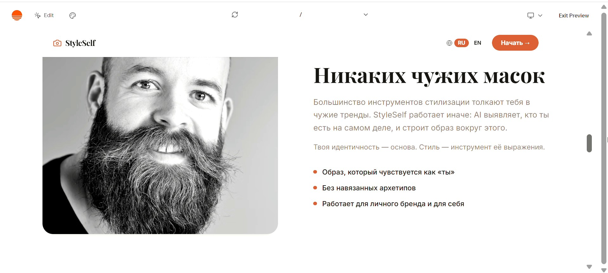
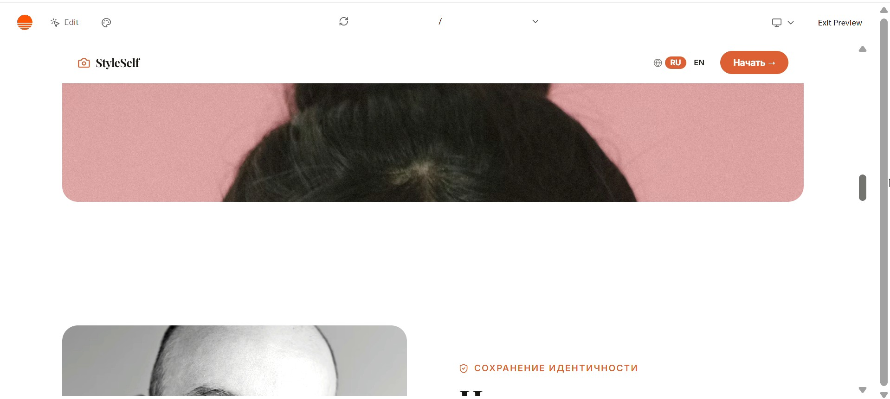

Для кого
Процесс не решается референсами.
Сотни сохранённых кадров не отвечают на главный вопрос: что именно подчеркнёт тебя, а не чужой типаж. StyleSelf собирает это в цельную систему.
AI-гид для фотосессии
StyleSelf помогает понять, какие образы, ракурсы и детали действительно работают на тебя. Без хаотичных сохранёнок, без лишних примерок, без ощущения «я опять не попала».

Для кого
Сотни сохранённых кадров не отвечают на главный вопрос: что именно подчеркнёт тебя, а не чужой типаж. StyleSelf собирает это в цельную систему.
Зачем это нужно
Ты заранее понимаешь атмосферу, цвет, фактуру, позирование и динамику кадра, поэтому на самой фотосессии не теряешься и не тратишь энергию впустую.
Как это работает
Никаких таблиц и шаблонов. Только короткий путь от «не знаю, какой образ выбрать» к ясной съёмочной концепции.
Заполняешь форму и описываешь задачу: личный бренд, портрет, съёмка для себя или обновление визуала в соцсетях.
Сервис собирает твою стилистику: настроение, свет, цвет, силуэты, эмоции, позы и фактуры, которые работают именно на тебя.
У тебя есть готовая база: от идеи и одежды до примеров позирования и общего ощущения будущих кадров.

О результате
Тебе не нужно влезать в модный образ, который живёт только на Pinterest. Итоговый визуал должен усиливать твою естественную подачу, а не спорить с ней.

Об авторе
Я собрала StyleSelf как понятный инструмент для тех, кто хочет перестать сомневаться перед съёмкой и начать создавать визуал, который ощущается своим.

Что внутри
Ты получаешь не просто набор картинок, а структуру: какие фото выбирать, что надевать, как держаться в кадре и какой вайб собирать.
Доступ
Полный доступ к базе, персональному разбору и маршруту подготовки к съёмке.
Самый понятный выбор
Разовый доступ ко всему материалу
Частые вопросы
Сразу после оплаты открывается страница с материалами и инструкцией по старту.
Первый понятный результат можно собрать за один вечер, без сложного онбординга.
Да. Методика одинаково полезна для экспертов, творческих проектов и съёмок для себя.
Система строится на твоих вводных, поэтому фокус не на трендах, а на личной подаче.
Финальный шаг
Узнай свой стиль, собери ясную визуальную концепцию и приходи на съёмку в состоянии уверенности, а не импровизации.